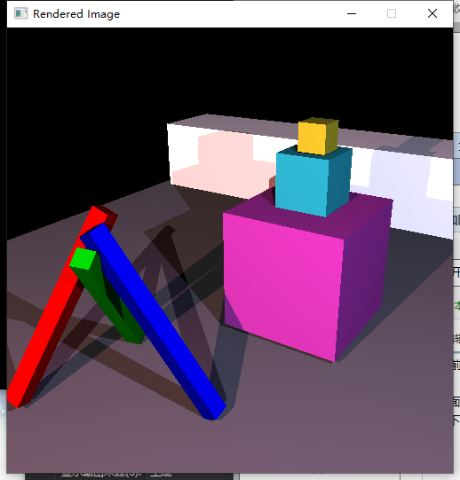
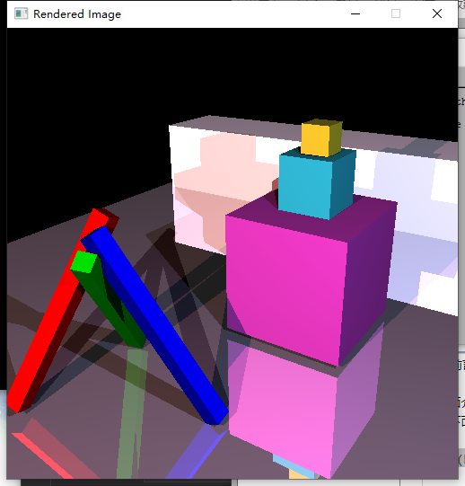
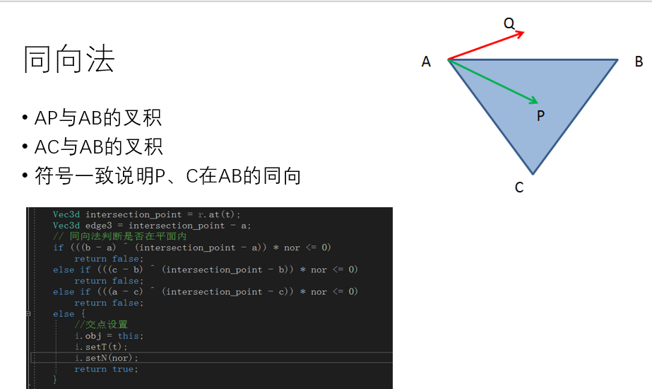
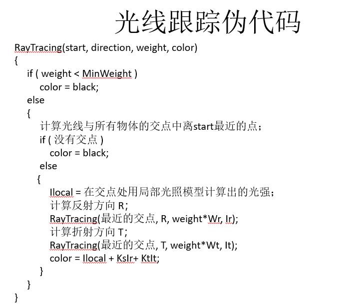
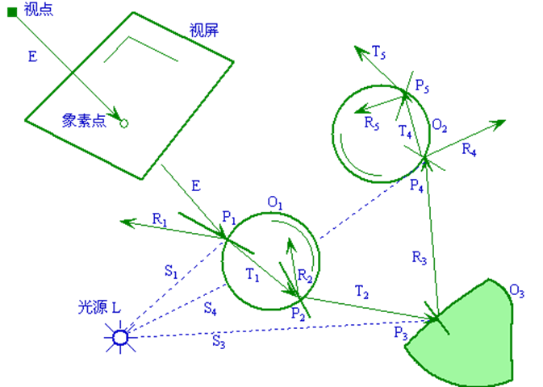
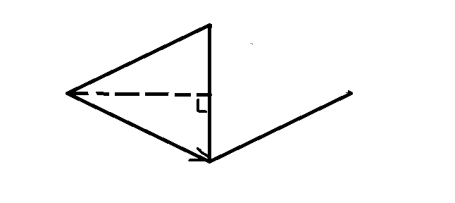
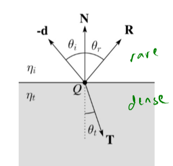

前面介绍了基本图形、模型、曲线的绘制，但是，在好像还没有感受到那种3D游戏里一些能惊艳到自己的效果，即真实感还不是很足。这篇文章中介绍的光线追踪，是实现真实感必不可少的。拿下面的两张图片来对比


对比一下是不是被下面这张图片的效果惊艳到了？可以很明显感觉到，下面的这个图片效果要好的多。这篇博客将介绍如何实现这样的效果。
这里暂时只介绍光线与球面和三角面片的求交
射线的方程：
\[
R(t) = A+tD
\]
球面的隐式方程：
\[
(X-C)^2=r^2
\]
联立两式：
\[
(A+tD-C)^2=r^2
\]
然后通过判别式：\[\Delta=4[(A-C) \cdot D]^2 - 4(A-C)^2+r^2\]来判断是否相交。
交点法向量：
\[
N=\frac{P-C}{||P-C||}
\]
bool Sphere::intersectLocal( const ray& r, isect& i ) const
{
// YOUR CODE HERE:
// 光线与球面相交
// Add sphere intersection code here.
Vec3d A = r.getPosition();
Vec3d D = r.getDirection();
Vec3d C= Vec3<double>();
double _r = 1.0;
double a = D.length2();
double b = 2 * (A - C) * D;
double c = (A - C).length2() - _r;
double delta = b * b - 4 * a * c;
// it currently ignores all spheres and just return false.
if (delta >= 0) {
double t1 = (-b + sqrt(delta)) / (2 * a);
double t2 = (-b - sqrt(delta)) / (2 * a);
if (t1 <= RAY_EPSILON)
return false;
else {
double t;
if (t2 <= RAY_EPSILON) {
t = t1;
i.outsideTheObject = false;
}
else {
t = t2;
i.outsideTheObject = true;
}
// 焦点设置
i.obj = this;
i.setT(t);
Vec3d P = r.at(t);
Vec3d Normal = P;
if (D*Normal > 0)
Normal = -Normal;
Normal.normalize();
i.setN(Normal);
return true;
}
}
return false;
}射线的方程：
\[
R(t) = A+tD
\]
三角面片点法式方程：
\[
N(p-p_1)=0
\]
联立两式得：
\[
t=\frac{N\cdot p_1 - N \cdot A}{n\cdot D}
\]
求出t后，便得到交点坐标，然后可通过同向法来判别交点是否在平面内。

// Calculates and returns the normal of the triangle too.
bool TrimeshFace::intersectLocal(const ray& r, isect& i) const
{
// YOUR CODE HERE:
// Add triangle intersection code here.
// it currently ignores all triangles and just return false.
//
// Note that you are only intersecting a single triangle, and the vertices
// of the triangle are supplied to you by the trimesh class.
//
// You should retrieve the vertices using code like this:
//
// const Vec3d& a = parent->vertices[ids[0]];
// const Vec3d& b = parent->vertices[ids[1]];
// const Vec3d& c = parent->vertices[ids[2]];
const Vec3d& a = parent->vertices[ids[0]];
const Vec3d& b = parent->vertices[ids[1]];
const Vec3d& c = parent->vertices[ids[2]];
Vec3d edge1 = b - a;
Vec3d edge2 = c - a;
// 计算平面法向量
Vec3d nor = edge1 ^ edge2;
nor.normalize();
// 判断是否与平面平行
float x = nor * r.getDirection();
if (x == 0)
return false;
// Ax + By + Cz = d
float d = nor * a;
float t = (d - nor * r.getPosition()) / x;
if (t <= RAY_EPSILON)
return false;
Vec3d intersection_point = r.at(t);
Vec3d edge3 = intersection_point - a;
// 同向法判断是否在平面内
if (((b - a) ^ (intersection_point - a)) * nor <= 0)
return false;
else if (((c - b) ^ (intersection_point - b)) * nor <= 0)
return false;
else if (((a - c) ^ (intersection_point - c)) * nor <= 0)
return false;
else {
//交点设置
i.obj = this;
i.setT(t);
i.setN(nor);
return true;
}
}当然，这里还可以使用重心坐标法来实现
在现实场景中，光线也是会衰减的，比如看同一场景，距离远近不同看到的清晰度也就不同，这是距离衰减。还有阴影衰减，当有物体遮挡住部分光的时候，会形成一定的阴影，这就是阴影衰减产生的效果。
点光源：
\[
A_{j}^{d i s t}=\min \left\{1, \frac{1}{a_{j}+b_{j} r_{j}+c_{j} r_{j}^{2}}\right\}
\]
double PointLight::distanceAttenuation( const Vec3d& P ) const
{
// You'll need to modify this method to attenuate the intensity
// of the light based on the distance between the source and the
// point P. For now, we assume no attenuation and just return 1.0
Vec3d d = P - position;
double r = d.length(); //距离
return min(1.0, 1.0 / (constantTerm + linearTerm * r + quadraticTerm * r*r));
// return 1.0;
}平行光源：
double DirectionalLight::distanceAttenuation( const Vec3d& P ) const
{
// distance to light is infinite, so f(di) goes to 0. Return 1.
return 1.0;
}点光源：
首先判断光线是否被遮挡，然后再判断是否超出光强所能打到的距离
Vec3d PointLight::shadowAttenuation(const Vec3d& P) const
{
// YOUR CODE HERE:
// You should implement shadow-handling code here.
Vec3d d = getDirection(P);
isect i;
ray shadowRay(P, d);
if (this->getScene()->intersect(shadowRay, i)) {
double tLight = (P - position).length();
if (i.t < tLight)
return Vec3d(0, 0, 0);
else
return Vec3d(1, 1, 1);
}
return Vec3d(1,1,1);
}
平行光：
只需判断是否被遮挡即可
Vec3d DirectionalLight::shadowAttenuation( const Vec3d& P ) const
{
// YOUR CODE HERE:
Vec3d d = getDirection(P);
isect i;
ray shadowRay(P, d);
if (this->getScene()->intersect(shadowRay, i)) {
return Vec3d(0, 0, 0);
}
// You should implement shadow-handling code here.
return Vec3d(1,1,1);
}先来份伪代码

光线跟踪中的四种射线：
视线：由视点与象素(x，y)发出的射线
阴影测试线：物体表面上点与光源的连线
反射光线
折射光线
光线追踪的过程

由物体表面上一点P反射到视点的光强I为环境光的反射光强\(I_e\)、理想漫反射光强\(I_d\)、和镜面反射光\(I_s\)的总和，即
\[
I=I_ak_a + I_lk_d(L \cdot N)+k_s\sum_{i=1}^{m}[I_{pi}(R \cdot V)^n]
\]
在washington CSE 457的课件中给出的公式为
\[
l_{\text {direct }}=k_{e}+k_{e} I_{L s}+\sum_{f} A_{j}^{\text {shadow}} A_{j}^{\text {dist}} I_{L j} B_{j}\left[k_{d}\left(\mathbf{N} \cdot \mathbf{L}_{j}\right)+k_{s}\left(\mathbf{N} \cdot \mathbf{H}_{j}\right)^{n_{s}}\right]
\]
其中\(k_d\)项表示漫反射，采用Lamber模型，\(k_s\)项表示镜面反射
\[
I_{d}=I_{p} K_{d} *(L \cdot N)
\]
\[ I_{s}=k_{s} I_{p}(R \cdot V)^{n} \]
即可写出下列代码
// Apply the Phong model to this point on the surface of the object, returning
// the color of that point.
Vec3d Material::shade( Scene *scene, const ray& r, const isect& i ) const
{
// YOUR CODE HERE
// For now, this method just returns the diffuse color of the object.
// This gives a single matte color for every distinct surface in the
// scene, and that's it. Simple, but enough to get you started.
// (It's also inconsistent with the Phong model...)
// Your mission is to fill in this method with the rest of the phong
// shading model, including the contributions of all the light sources.
// You will need to call both distanceAttenuation() and shadowAttenuation()
// somewhere in your code in order to compute shadows and light falloff.
if( debugMode )
std::cout << "Debugging the Phong code (or lack thereof...)" << std::endl;
Vec3d pos = r.at(i.t);
Vec3d N = i.N;
N.normalize();
Vec3d Ip, L, H, Atten;
Vec3d shadow = ke(i) + prod(scene->ambient(), ka(i));
for (vector<Light*>::const_iterator litr = scene->beginLights();
litr != scene->endLights(); ++litr) {
Light* pLight = *litr;
Ip = pLight->getColor(pos);
L = pLight->getDirection(pos);
H = -r.getDirection() + L; H.normalize();
Atten = pLight->distanceAttenuation(pos)*pLight->shadowAttenuation(pos);
shadow += prod(Atten, prod(Ip, kd(i)*(L*N) + ks(i)*pow(H*N, 256)));
}
return shadow;
}这里的反射指的是镜面反射
计算公式：
\[
R=2(V\cdot N)N-V
\]
为什么是这样呢？首先来看\(V\cdot N\)，这里N是交点处的法向量，并且是单位向量，那个即视线在法向量上的投影，再乘法向量的两倍，得到的是平行四边形的对角线，减去V便是反射后的光线的方向。

跟反射方向一样都是公式推导
\[
\begin{array}{l}{\eta=\frac{\eta_{i}}{\eta_{t}}} \\ \eta_{i} \sin \theta_{i}=\eta_{t} \sin \theta_{t} \\ {\cos \theta_{i}=\mathbf{N} \cdot \mathbf{V}} \\ {\cos \theta_{t}=\sqrt{1-\eta^{2}\left(1-\cos ^{2} \theta_{i}\right)}} \\ {\mathbf{T}=\left(\eta \cos \theta_{i}-\cos \theta_{t}\right) \mathbf{N}-\eta \mathbf{V}}\end{array}
\]

经过上述的介绍，很容易可以想到，什么时候终止光线追踪
该光线未碰到任何物体
该光线碰到了背景
光线在经过许多次反射和折射以后，就会产生衰减，光线对于视点的光强贡献很小（小于某个设定值）。
光线反射或折射次数即跟踪深度大于一定值
因此，光线追踪的代码实现如下
// Do recursive ray tracing! You'll want to insert a lot of code here
// (or places called from here) to handle reflection, refraction, etc etc.
Vec3d RayTracer::traceRay( const ray& r,
const Vec3d& thresh, int depth )
{
isect i;
if( scene->intersect( r, i ) && depth >= 0) {
const Material& m = i.getMaterial();
//计算光源直射
Vec3d I = m.shade(scene, r, i);
//计算反射递归
Vec3d Q = r.at(i.t);
Vec3d R = r.getDirection() - 2 * (r.getDirection()*i.N)*i.N;
R.normalize();
I += prod(m.kr(i), traceRay(ray(Q, R), thresh, depth - 1));
//计算折射递归
double cosThetaI = -i.N*r.getDirection();
double eta = (i.outsideTheObject) ? 1.0003 / m.index(i) : m.index(i) / 1.0003;
if (eta*eta*(1 - cosThetaI * cosThetaI) < 1) {
double cosThetaT = sqrt(1 - eta * eta*(1 - cosThetaI * cosThetaI));
Vec3d T = (eta*cosThetaI - cosThetaT)*i.N - eta * r.getDirection();
T.normalize();
I += prod(m.kt(i), traceRay(ray(Q, -T), thresh, depth - 1));
}
return I;
// An intersection occured! We've got work to do. For now,
// this code gets the material for the surface that was intersected,
// and asks that material to provide a color for the ray.
// This is a great place to insert code for recursive ray tracing.
// Instead of just returning the result of shade(), add some
// more steps: add in the contributions from reflected and refracted
// rays.
//const Material& m = i.getMaterial();
//return m.shade(scene, r, i);
} else {
// No intersection. This ray travels to infinity, so we color
// it according to the background color, which in this (simple) case
// is just black.
return Vec3d( 0.0, 0.0, 0.0 );
}
}到这里，光线追踪也就差不多介绍完了，这一系列博客也算是收尾了。那天在课上听其他同学展示的的时候，说是我的世界有部分的开源源码，里面有一个可以实现光追的接口，有兴趣的小伙伴可以去康康，似乎那个仅仅实现光追还无法达到很好的效果，还要加上路线追踪，emmmmm。。。。期末考完有空了我再去康康，明早图形学考试祝我好运 orz